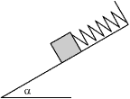

Un muelle de constante 4.9 N /cm, suspendido del techo, tiene un bloque de 2 kg unido a su extremo libre. a) Determina la elongación del muelle cuando el bloque está en equilibrio
Calcula la aceleración del bloque cuando partiendo de la posición de equilibrio:
b) Se tira del bloque 2 cm hacia abajo y se suelta
c) Se empuja el bloque 1 cm hacia arriba y se suelta
d) Se empuja el bloque 5 cm hacia arriba y se suelta
 |
En la figura el plano inclinado es liso y el bloque está en equilibrio cuando la elongación del muelle es d. Suponiendo que el coeficiente de rozamiento entre bloque y plano fuera μ determina: a) El máximo alargamiento del muelle que mantendrá al bloque en equilibrio b) La máxima compresión del muelle que mantendrá al bloque en equilibrio |
Un muelle de constante 19.6 N/cm cuelga del techo, en su extremo libre se cuelga otro muelle de constante 39.2 N/cm en cuyo extremo libre se cuelga un bloque de 10 kg. Determina el alargamiento de cada muelle cuando el bloque está en equilibrio
Un bloque de 5 kg se encuentra sobre una superficie horizontal lisa unido a un muelle de constante 0.5 N/cm. Se separa el bloque de su posición de equilibrio y se suelta, demuestra que oscilará armónicamente y calcula el período
Determina el período de oscilación de un bloque de 2 kg unido a un muelle de constante 1 N/m colgado del techo
 |
Dejando libre la bolita esta se mueve sin rozamiento sobre los planos inclinados a) Determina el período del movimiento b) ¿Es armónico? |
La escala de un dinamómetro abarca de 0 a 16 kp y tiene una longitud de 15 cm. Se observa que un cuerpo suspendido del dinamómetro oscila con una frecuencia de 1.5 ciclos ¿Cuál es su masa?
 |
El bloque de masa m descansa
sobre una superficie lisa y está unido a sendos muelles,
de constantes k1, k2 , sin deformar. |